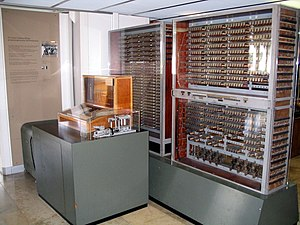

About Us
In the 1770s, Pierre Jaquet-Droz, a Swiss watchmaker, built a mechanical doll (automaton) that could write holding a quill pen. By switching the number and order of its internal wheels different letters, and hence different messages, could be produced. In effect, it could be mechanically "programmed" to read instructions. Along with two other complex machines, the doll is at the Musée d'Art et d'Histoire of Neuchâtel, Switzerland, and still operates.
In 1831–1835, mathematician and engineer Giovanni Plana devised a Perpetual Calendar machine, which, through a system of pulleys and cylinders and over, could predict the perpetual calendar for every year from AD 0 (that is, 1 BC) to AD 4000, keeping track of leap years and varying day length. The tide-predicting machine invented by the Scottish scientist Sir William Thomson in 1872 was of great utility to navigation in shallow waters. It used a system of pulleys and wires to automatically calculate predicted tide levels for a set period at a particular location.
The differential analyser, a mechanical analog computer designed to solve differential equations by integration, used wheel-and-disc mechanisms to perform the integration. In 1876, Sir William Thomson had already discussed the possible construction of such calculators, but he had been stymied by the limited output torque of the ball-and-disk integrators.[16] In a differential analyzer, the output of one integrator drove the input of the next integrator, or a graphing output. The torque amplifier was the advance that allowed these machines to work. Starting in the 1920s, Vannevar Bush and others developed mechanical differential analyzers.
Our first PC build.

This is actually random information from Wikipedia.